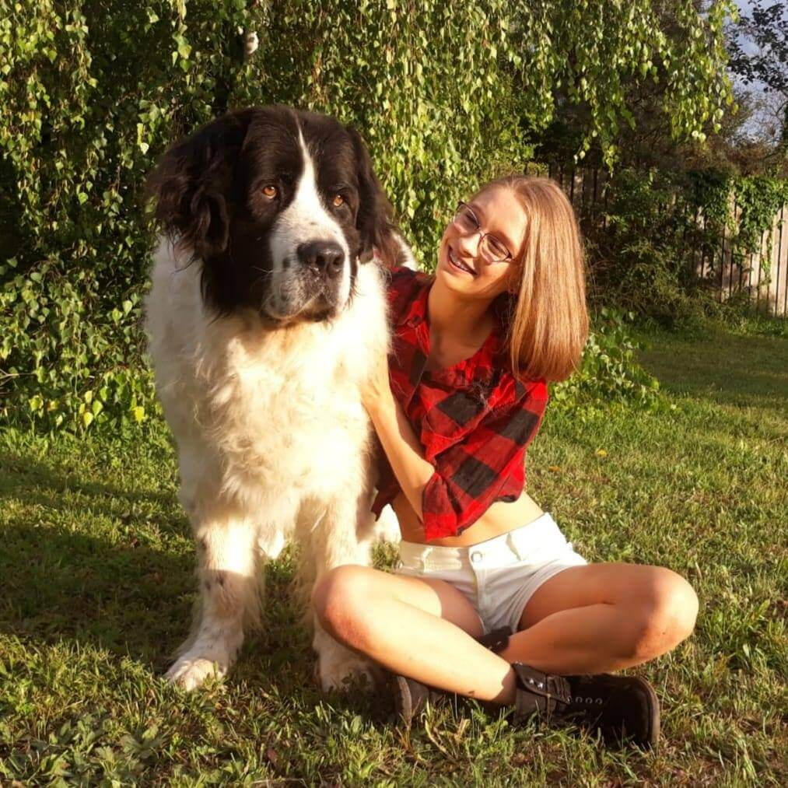

Csepke Földvári-Nagy
e-mail: fnkcsepke@gmail.com
Schools:
- 2017-(2022)
- Budaörsi Illyés Gyula Gimnázium (High School), Budaörs, Hungary
- 2015-2017
- ELTE Trefort Ágoston Gyakorló Gimnázium (High School), Budapest, Hungary
- 2009-2015
- Pipacsvirág Általános Iskola (Primary School), Telki, Hungary
Language knowledge:
| Hungarian |
native language |
| English |
B2 (C level in progress) |
| Spanish |
intermediate |

Extra-curricular activities:
- 2020
- Spanish language course (AIL Málaga), Malaga, Spain
- 2016
- English language course (EF Education First), Cambridge, UK